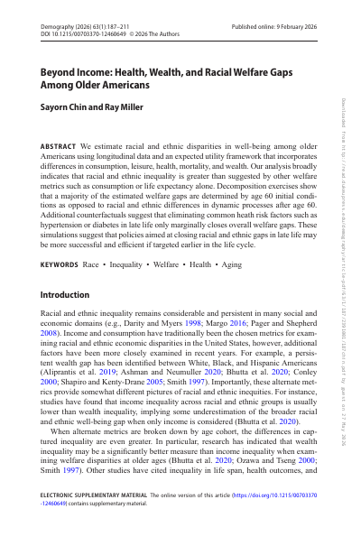
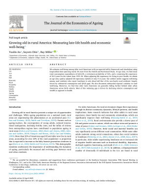
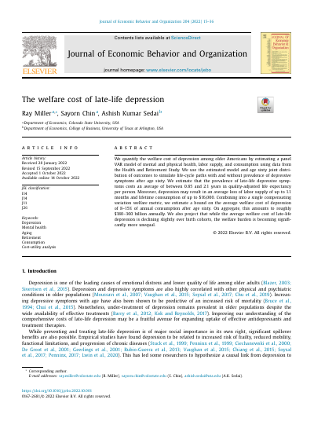
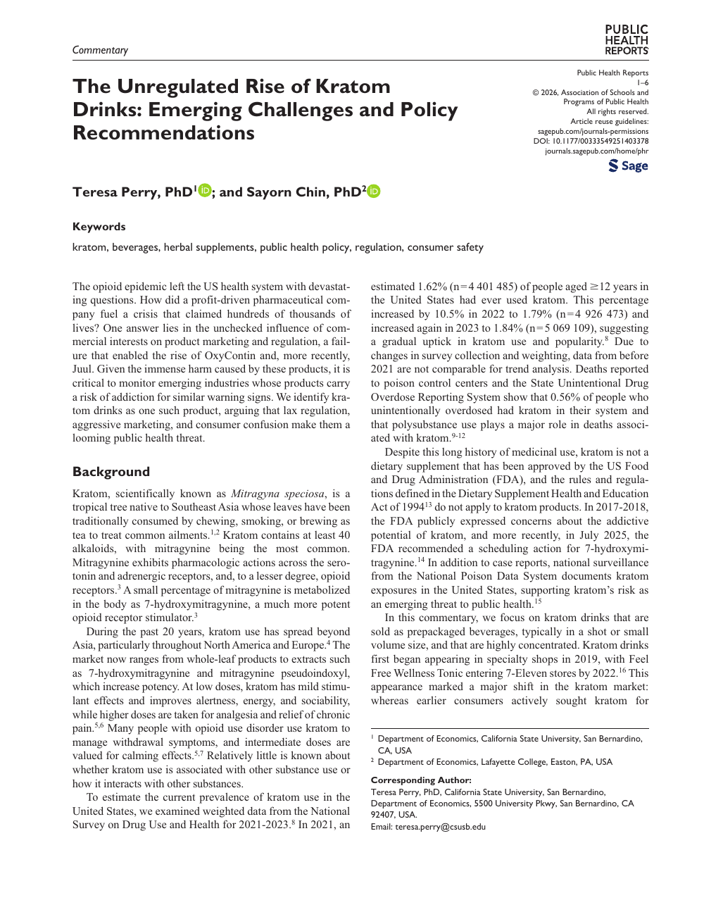
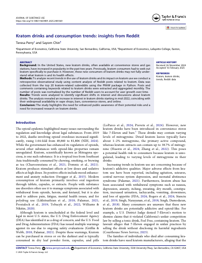
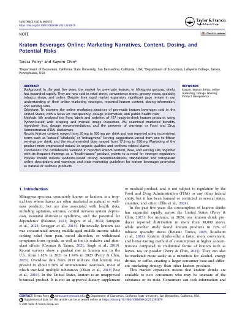

, & Miller, R. (2026). Beyond income: Health, wealth, and racial welfare gaps among older Americans. Demography, 63(1), 187–211.
We measure racial and ethnic welfare gaps among older Americans using an expected utility framework that incorporates consumption, leisure, health, mortality, and wealth. Most of the estimated gap is determined by age-60 initial conditions, suggesting that policy aimed at closing late-life gaps may be more effective if targeted earlier in the life cycle.

An, Y., , & Miller, R. (2025). Growing old in rural America: Measuring late-life health and economic well-being. Journal of the Economics of Ageing, 31, 100565.
We estimate well-being among older rural Americans using nearly 30 years of Health and Retirement Study data. Loneliness halves welfare among rural residents, and the gap between older rural and urban Americans is widening across birth cohorts.

Miller, R., , & Sedai, A. K. (2022). The welfare cost of late-life depression. Journal of Economic Behavior & Organization, 204, 15–36.
We quantify the welfare cost of depression after age 60 using a panel VAR model of mental and physical health, labor supply, and consumption. The aggregate cost is roughly $180–360 billion annually, and the burden is becoming significantly more unequal across cohorts.

Perry, T., & (2026). The unregulated rise of kratom drinks: Emerging challenges and policy recommendations. Public Health Reports, 1–6.
We argue that kratom drinks are a looming public health threat. Lax regulation, aggressive marketing, and consumer confusion echo earlier failures in addictive-substance oversight, drawing on parallels to OxyContin and Juul to motivate stronger regulation.

Perry, T., & (2026). Kratom drinks and consumption trends: Insights from Reddit. Journal of Substance Use, 31(1), 124–132.
We analyze top kratom subreddits with a content-analysis pipeline in Python to track shifting consumer interest. Interest in kratom drinks rose sharply starting mid-2022, mirroring their availability in vape shops, bars, and convenience stores.

Perry, T., & (2025). Kratom beverages online: Marketing narratives, content, dosing, and potential risks. Substance Use & Misuse, 1–4.
We analyze the front labels and websites of 107 ready-to-drink kratom products. Reported kratom content varies 25-fold across products and serving suggestions range from one to fifteen per drink — pointing to a need for evidence-based dosing rules and standardized labeling.
, Io, K., Kırşanlı, F., & Perry, T. (2026). From cheating to learning: AI integration in introductory economics. Journal of Economics Teaching, 11(2), 208–228.
We propose a framework for designing ChatGPT-integrated assignments in introductory economics, with two ready-to-use assignments for principles of micro and macro. Preliminary survey evidence shows students engage with AI as a complement to learning rather than a substitute.
Loss or Gain from Separation? Wealth and Child Mental Health in Divorce Dynamics, with Solano Caffarena, Swarup Joshi, and Ashish Kumar Sedai.
We use longitudinal PSID and Child Development Supplement data to ask how divorce affects children's mental health across the wealth distribution. Children in low-wealth households experience a marked rise in mental disabilities after divorce, while family wealth buffers the effect—with the heaviest burden falling on low-wealth, Black female-headed households.
The Longer Reach of Lead: Early Childhood Lead Exposure and Cognitive Ability Later-in-Life, with Sammy Zahran, Christopher Keyes, and David Mushinski.
We link early-life exposure to leaded gasoline to cognitive ability later in life, combining NHANES II and NLSY97. Greater early-childhood lead exposure predicts worse adult cognitive performance and altered risk-taking, evidence that the developmental harms of lead persist far longer than commonly assumed.
The Compensation of Conscience, with Sammy Zahran and Anders Fremstad.
We ask whether labor markets compensate workers for compromising their moral or professional convictions, using a 25-year NLSY97 panel linked to O*NET in two-way fixed-effects models. Occupations that pressure workers to act against their conscience pay systematically higher wages—a premium that attenuates during recessions and rises sharply with education.
Air Pollution and Crime: Heterogeneity by Offense Types and Exposure Intensity, with Salvador Lurbé and Prasiddha Shakya.
We study ambient particulate pollution and crime across 382 UK local authority districts from 2014 to 2019 using fixed-effects models. Economically motivated offenses rise with pollution more consistently than violent crime, pointing to cognitive-load and deterrence channels and suggesting that the social costs of pollution extend beyond health and productivity to public safety.
Maternal Lead Exposure and Birth Outcomes: Evidence from Natural Experiments in the Phase-out of Leaded Gasoline, with Sammy Zahran, Christopher Keyes, and Yuulin An.
We exploit natural experiments in the phase-out of leaded gasoline and mothers' migration during pregnancy to identify the effect of fetal lead exposure on infant health. Higher maternal blood lead lowers birthweight, shortens gestation, and raises the risks of low birthweight and prematurity—underscoring the lasting costs of legacy lead exposure.
The Effect of Leaded Gasoline on Infant Health: Evidence from NASCAR Fuel Transition, with Yuulin An and Sammy Zahran.
We study episodic airborne lead from NASCAR races—run on leaded gasoline through 2006—using Texas birth records near the Texas Motor Speedway, with identification from within-track variation in distance, wind, and race emissions. Pre-ban exposure lowers birthweight and gestational age while a post-ban placebo is null, isolating lead as the causal channel and showing that even small, episodic lead sources carry measurable fetal-health costs.
Lead Exposure and Heart-Disease Mortality in the United States, with Christopher Keyes, Bruce Lanphear, and Sammy Zahran.
Tip Credit Effects on Employment, Earnings, and Establishments, with Vinicius Curti Cícero and Sammy Zahran.
Excess Emissions and Infant Health: Evidence from Texas, with Susan Averett.
Malpractice Liability, Customary Care, and Physician Procedure Choice, with David Mushinski and Sammy Zahran.